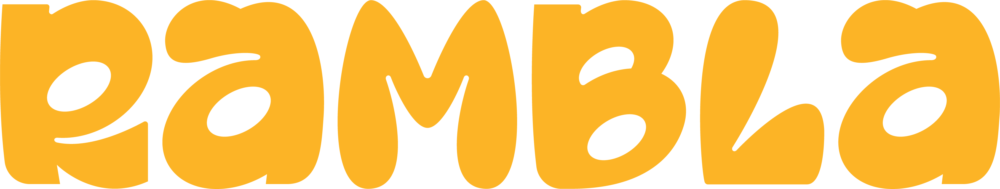

Logo · usar siempre que se pueda

El logo pintado oficial (assets/rambla-wordmark-only.png). Es artwork hecho a mano — no es una tipografía. Para cualquier lockup, header, footer o mockup, usar el PNG.
Fallback en código · solo si el PNG no entra
rambla
Champ Black 900 + lowercase + tracking +0.01em. Aproximación tipográfica para body-text donde el PNG no funciona (hero gigante reflowable, etc). Para todo lo demás, usar el PNG de arriba.